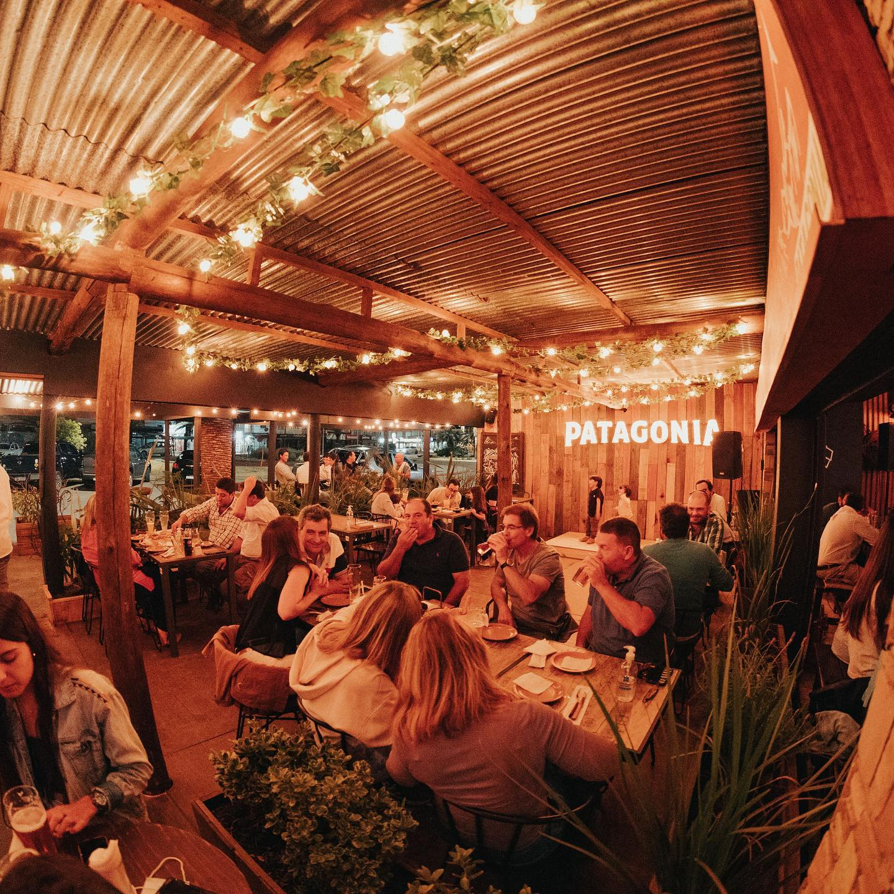
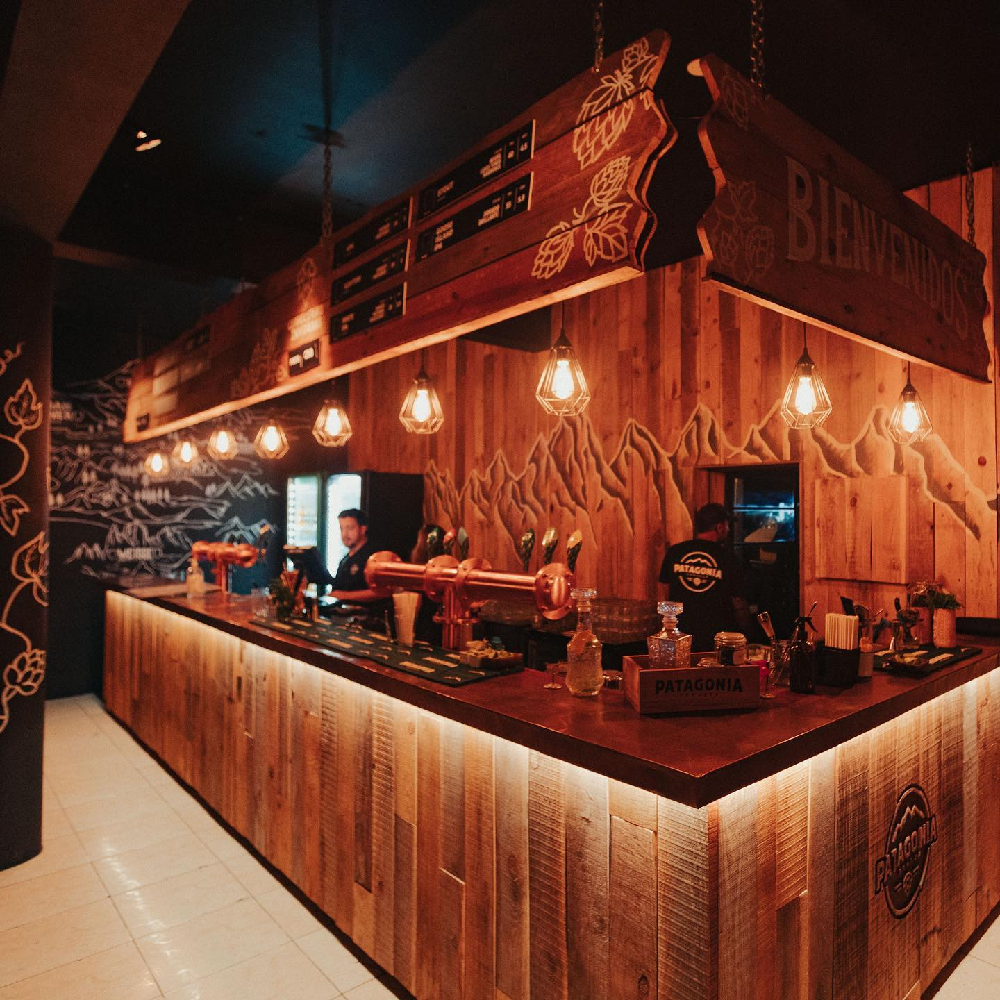

NUESTRA HISTORIA
Historia de la Cerveza Patagonia La historia de la cerveza Patagonia
comienza en 2007, cuando un grupo de amigos amantes de la cerveza
artesanal en la Patagonia argentina, decidieron crear una cervecería
que reflejara el espíritu y la calidad de la región. Fue así como se
fundó la Cervecería Patagonia en San Carlos de Bariloche, una ciudad
ubicada en la provincia de Río Negro, República Argentina. La
cervecería comenzó a producir cerveza con ingredientes locales y
utilizando técnicas artesanales, con el objetivo de crear una
cerveza que representara el sabor y la cultura de la Patagonia. La
cerveza Patagonia se convirtió rápidamente en un éxito en Argentina,
y comenzó a expandirse en otros países.
¿Quiénes fueron los fundadores de la Cerveza Patagonia?
Entre los fundadores de la Cervecería Patagonia se encuentran
Mariano Fiori, Mauricio García González, Andrés Nusser y Fernando
Farias, quienes crearon la empresa en San Carlos de Bariloche en el
año 2007. Juntos, ellos establecieron la visión y los valores que
definen a la marca hasta el día de hoy, incluyendo el uso de
ingredientes locales y la aplicación de técnicas artesanales para
crear cervezas de alta calidad que reflejen la cultura y el sabor de
la Patagonia.
¿Dónde se fabrica la Cerveza Patagonia?
La Cerveza Patagonia es fabricada en Argentina. Su origen se
encuentra en la región de la Patagonia, que abarca el sur de
Argentina y Chile. La cervecería tiene su sede principal en el área
de Bariloche, en la provincia de Río Negro, Argentina. La
microcervecería se ubica en el KM 24.7 de Circuito Chico, Bariloche.